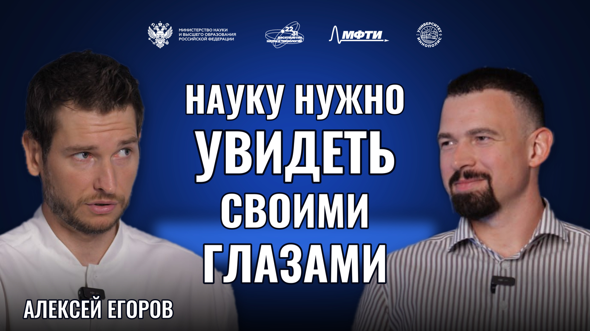

Алексей Егоров
Журналист, телеведущий, автор и шеф-редактор научно-популярных проектов телеканала «Наука»
«Науку нужно увидеть своими глазами»Что остаётся за кадром научно-популярной программы? Алексей Егоров рассказывает о пути из новостей на телеканал «Наука», встречах с исследователями и местах, где научные открытия становятся ближе.

01О герое
Алексей Егоров — журналист, ведущий и продюсер научно-популярных программ телеканала «Наука». Среди проектов, связанных с его работой, — «Правила взлома», «Включай голову», «Не факт», «Научтоп» и «В погоне за чудом». Специализируется на создании телевизионных историй, которые объясняют научные темы широкой аудитории.
02Ключевые тезисы
- Путь Егорова в научную журналистику начался с новостей и репортажей. В проекте «Реальный мир» он попробовал соединить рассказ об устройстве технологий с вопросами, которые волнуют зрителя.
- Научный музей может быть интересен и детям, и взрослым. Егоров приводит в пример павильон «Атом», где экспозиция позволяет не только прочитать объяснение, но и получить собственный опыт.
- В поездках на научные объекты запоминаются и установки, и люди. Рассказывая о Баксанской нейтринной обсерватории, Егоров особенно выделяет исследователей, которые годами работают над сложными задачами.
- Личная поездка может стать началом самостоятельного исследования. Увиденная обсерватория, необычное здание или работающий прибор вызывают вопросы, на которые затем хочется искать ответы.
03Возьми с собой
Что применить
Выберите научный музей или обсерваторию, куда можно попасть на экскурсию. Заранее придумайте один вопрос о работе экспоната или прибора, а после поездки найдите объяснение тому, что особенно заинтересовало.
В этом выпуске
Телевизионный научпоп, работа с учёными, музей «Атом», Баксанская нейтринная обсерватория и личный опыт путешествий.